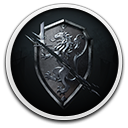

 Thronebreaker: The Witcher Tales
Detalhes

Descrição
The Witcher World is Back!
"A spectacularly crafted RPG" - 5/5 - GamesRadar
"One of the best-written RPGs in years" - 9.4/10 - IGN
"Superb" - 9/10 - GameSpot
Thronebreaker is a single player role-playing game set in the world of The Witcher that combines narrative-driven exploration with unique puzzles and card battle mechanics.
Crafted by the developers responsible for some of the most iconic moments in The Witcher 3: Wild Hunt, the game spins a truly regal tale of Meve, a war-veteran and queen of two Northern Realms — Lyria and Rivia. Facing an imminent Nilfgaardian invasion, Meve is forced to once again enter the warpath and set out on a dark journey of destruction and revenge.
"A spectacularly crafted RPG" - 5/5 - GamesRadar
"One of the best-written RPGs in years" - 9.4/10 - IGN
"Superb" - 9/10 - GameSpot
Thronebreaker is a single player role-playing game set in the world of The Witcher that combines narrative-driven exploration with unique puzzles and card battle mechanics.
Crafted by the developers responsible for some of the most iconic moments in The Witcher 3: Wild Hunt, the game spins a truly regal tale of Meve, a war-veteran and queen of two Northern Realms — Lyria and Rivia. Facing an imminent Nilfgaardian invasion, Meve is forced to once again enter the warpath and set out on a dark journey of destruction and revenge.
KEY FEATURES
AN ALL NEW EPIC TALE
- Experience an all-new 30-hour Witcher world tale with 20 possible world end-states.
- Embark on a grand adventure full of thought-provoking quests.
- Influence the state of the world around you by making difficult choices and face their consequences.
- Meet a cast of rich, multidimensional characters — some of them will join you on your quest, others you’ll have to face on the battlefield.

TRAVEL TO NEVER-BEFORE-SEEN KINGDOMS
- Explore new and mysterious regions of the monster-infested world of The Witcher.
- Traverse vast lands and unique locations, all with their distinct theme — from vibrant countrysides and war-torn landscapes, to grand castles and snow-capped mountains.
- Save villages from hordes of monsters, look for treasures hidden among ancient ruins, scour the land for resources, and more — the world of Thronebreaker is teeming with things to do.

PREPARE FOR WAR
- Develop and customize your very own battle camp.
- Train and recruit units, unlock new skills and work on your tactics.
- Manage resources you find and trade them with local merchants.
- Learn more about your companions and increase their strength in battle.

LEAD YOUR ARMY IN EPIC BATTLES
- Build an army from characters you meet and interact with during your journey.
- Fight in epic story battles and solve unique puzzles and challenges.
- Use unique skills and abilities of your army and lead it to victory.

Thronebreaker: The Witcher Tales comes with these bonus items:
- Official Thronebreaker Soundtrack
- Digital version of GWENT: Art of The Witcher Card Game artbook from Dark Horse
- Concept art, including the map of Lyria
- The Witcher graphic novel "Fox Children" by Dark Horse